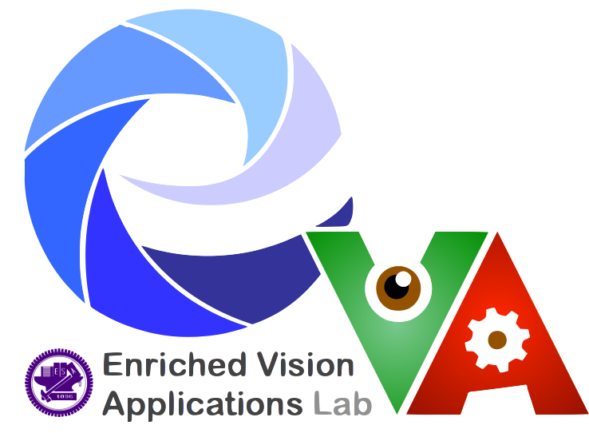

Associate Professor in Computer Science
at National Chiao Tung University
Frank S Chen Junior Chair Professor
cacaFly Junior Chair Professor
Doctor of Engineering Science (Dr.-Ing.)
Max Planck Institute for Informatics
|
walon [at] cs [dot] nctu [dot] edu [dot] tw |
||
|
Curriculum Vitae |
|
Google Scholar |



[Office] Room 526, Engineering Building C, Guangfu Campus, NCTU
[Telephone] +886-3-5712121 ext.54730
Information about my research group:
[Name] Enriched Vision Applications Lab
[Location] Room 548, Engineering Building C, Guangfu Campus, NCTU
News
- I am looking for highly-motivated students to join my research group. Please send me an e-mail if you are interested. (110學年度推甄與考試生皆已收滿!)
- [03rd.07.2022] Two conference papers accepted in ECCV 2022.
- [30th.06.2022] Three conference papers accepted in IROS 2022.
- [30th.05.2022] Awarded Young Scholars’ Creativity Award from Foundation for the Advancement of Outstanding Scholarship, Taiwan.
- [24th.04.2022] Awarded K. T. Li Young Researcher Award from Institute of Information and Computing Machinery, Taiwan.
- [21st.04.2022] Invited talk on my research works, Dept. of Applied Mathematics, NSYSU, Taiwan.
- [11th.04.2022] Invited talk on my research works, Institute of Statistical Science, Academia Sinica, Taiwan.
- [30th.03.2022] Invited talk on my research works, Institute of Information Systems and Applications, NTHU, Taiwan.
- [24th.03.2022] Invited talk on my research works, Dept. of Computer Science, NUTN, Taiwan.
- [22nd.01.2022] One conference paper accepted in ICASSP 2022.
- [21st.01.2022] One conference paper accepted in ICLR 2022.
- [17th.12.2021] Awarded 2021 Outstanding Young Electrical Engineer Award, the Chinese Institute of Electrical Engineering (CIEE), Taiwan.
- [09th.12.2021] Invited talk on my research works, UAiTED Industry - Academia Sharing Seminar, Hsinchu, Taiwan
- [15th.10.2021] One conference paper accepted in BMVC 2021.
- [06th.10.2021] Invited talk on my research works, Institute of Information Systems and Applications, NTHU, Taiwan.
- [05th.10.2021] One conference paper accepted in WACV 2022.
- [28th.09.2021] 2021 NYCU Campus Award for Outstanding Underraduate Student Mentoring.
- [23rd.07.2021] Two conference papers accepted in ICCV 2021.
- [19th.07.2021] One poster/demo submission accepted in UbiComp/ISWC 2021.
- [13th.07.2021] Short course on Domain Adaptation, ITRI, Taiwan.
- [01st.06.2021] One conference paper accepted in MVA 2021 (awarded as Best Paper).
- [20th.05.2021] One conference paper accepted in ICIP 2021.
- [14th.05.2021] One conference paper accepted in MICCAI 2021.
- [13th.05.2021] One conference paper accepted in UAI 2021.
- [01st.03.2021] Two conference papers accepted in CVPR 2021.
- [28th.02.2021] One conference paper accepted in ICRA 2021.
- [30th.01.2021] One conference paper accepted in ICASSP 2021.
- [13th.01.2021] Awarded 6th EECS Outstanding Young Scholar Award, National Chiao Tung University, Taiwan.
- [11th.01.2021] Invited talk on my research works, LangLive, Taiwan.
- [29th.12.2020] Invited talk on my research works, Dept. of Electrical Engineering, NTU, Taiwan.
- [19th.12.2020] Invited talk on my research works, the 2020 Meeting of Chinese Statistical Association (CSA), Taiwan.
- [16th.12.2020] Invited talk on my research works, Dept. of Computer Science, NTHU, Taiwan.
- [15th.12.2020] One-day course on artificial intelligence and big data, Exploration & Development Research Institute, CPC Corporation, Taiwan.
- [08th.12.2020] One-day course on machine learning, ITRI, Taiwan.
- [02nd.11.2020] Two conference papers accepted in WACV 2021.
- [31st.10.2020] Invited talk on my research works, 4th Augmented Intelligence and Interaction (AII) Workshop.
- [19th.10.2020] Invited talk on my research works, Dept. of Electrical Engineering, NTU, Taiwan.
- [14th.10.2020] One conference paper accepted in TAAI 2020 (awarded as Best Paper - Masterpiece).
- [12th.10.2020] Three conference papers accepted in ICPR 2020.
- [Fall.2020] Course on deep generative models, MediaTek Inc., Taiwan.
- [17th.09.2020] One conference paper accepted in ACCV 2020.
- [30th.07.2020] One conference paper accepted in BMVC 2020.
- [03rd.07.2020] One poster/demo submission accepted in UbiComp/ISWC 2020.
- [03rd.07.2020] One conference paper accepted in ECCV 2020.
- [10th.06.2020] Invited talk on my research works, Dept. of Computer Science, NCU, Taiwan.
- [23rd.02.2020] Two conference papers accepted in CVPR 2020.
- [22nd.01.2020] Two conference papers accepted in ICRA 2020.
- [04th.01.2020] Invited talk on my research works, Taiwan AI Academy, Hsinchu, Taiwan.
- [09th.12.2019] One conference paper accepted in WACV 2020.
- [26th.11.2019] Invited talk on "From Low-Level Vision, Detailed Recognition, to Some Funs in Images", Institute of Industrial Science, University of Tokyo, Japan.
- [08th.10.2019] Short course on Domain Adaptation, ITRI, Taiwan.
- [Fall.2019] Course on deep generative models, MediaTek Inc., Taiwan.
- [20th.08.2019] EVA Lab has moved to Room 548, Engineering Building C, Guangfu Campus, NCTU.
- [19th.07.2019] Invited talk on my research works, AsusTek Computer Inc., Taiwan.
- [01st.07.2019] One conference paper accepted in BMVC 2019.
- [20th.06.2019] One conference paper accepted in IROS 2019.
- [05th.06.2019] Invited talk on my research works, Institute of Statistical Science, Academia Sinica, Taiwan.
- [25th.05.2019] Invited talk on my research works, Taiwan AI Academy, Hsinchu, Taiwan.
- [16th.05.2019] One paper accepted in CLIC 2019 Workshop (in conjunction with CVPR).
- [23rd.03.2019] Invited talk on my research works, Taiwan AI Academy, Hsinchu, Taiwan.
- [25th.02.2019] Two conference papers accepted in CVPR 2019.
- [02nd.02.2019] One conference paper accepted in ICASSP 2019.
- [26th.01.2019] One conference paper accepted in ICRA 2019.
- [27th.12.2018] Invited talk on my research works, Dept. of Statistics, NCKU, Taiwan.
- [12th.12.2018] Invited talk on my research works, Information Retrieval Workshop, Academia Sinica, Taiwan.
- [20th.10.2018] Invited talk on "Reduce Consumption in Learning: from Data, Model, and Task", Taiwan AI Academy, Hsinchu, Taiwan.
- [17th.10.2018] Introduction to computer vision and machine learning, National Taichung First Senior High School (TCFSH), Tainan, Taiwan.
- [Fall.2018] Course on deep generative models, MediaTek Inc., Taiwan.
- [03rd.07.2018] One conference paper accepted in ECCV 2018.
- [27th.05.2018] Invited talk on "Saliency-Guidance Image Manipulation and Cross-Domain Disentanglement", 6th TWSIAM Annual Meeting, Taipei, Taiwan.
- [19th.02.2018] One conference paper accepted in CVPR 2018.
- [05th.01.2018] Introduction to computer vision and machine learning, National Tainan First Senior High School (TNFSH), Tainan, Taiwan.
- [23rd.12.2017] Congrats to Yen-Cheng Liu, Yu-Ying Yeh, Hsuan-I Ho, and Tzu-Chien Fu (co-supervised with Prof. Yu-Chiang Frank Wang @ NTU) for winning first place of "MOST Workshop on Generative Adversarial Networks and GAN Project Competition".
- [08th.12.2017] Short course on deep generative models, ITRI, Taiwan.
- [04th.12.2017] Invited talk on my research works, Dept. of CSIE, NTUST, Taiwan.
- [29th.11.2017] Invited talk on my research works, TIGP, Academia Sinica, Taiwan.
- [24th.11.2017] Invited talk on my research works, Inst. of COM, NTHU, Taiwan.
- [16th.10.2017] CS seminar for senior students, Dept. of CS, NCTU, Taiwan.
- [02nd.10.2017] Invited talk on my research works, Dept. of CSIE, CCU, Taiwan.
- [Fall.2017] Course on deep generative models, MediaTek Inc., Taiwan.
- [13th.09.2017] Introduction to computer vision and machine learning, National Experimental High School at Hsinchu Science Park (NEHS), Hsinchu, Taiwan.
- [08th.08.2017] Two conference papers accepted in MLSP 2017.
- [12th.05.2017] Invited talk on my research works, Dept. of EE, CCU, Taiwan.
- [14th.03.2017] I am excited to join the Dept. of CS, NCTU, Taiwan, as an Assistant Professor from August, 2017.
- [27th.02.2017] A conference paper accepted in CVPR 2017.
- [08th.02.2017] I join MML research group, CITI, Academia Sinica, Taiwan, as a postdoctoral researcher.
Education

Computer Vision and Multimodal Computing,
Max Planck Institute for Informatics, Saarbrücken, Germany
(Advisor: Dr. Mario Fritz)
[August.2011 - September.2016]

National Chiao Tung University, Taiwan
(Advisor: Prof. Jen-Hui Chuang and Prof. Sheng-Jyh Wang)
[September.2008 - July.2009]
Carnegie Mellon University, U.S.
(Advisor: Prof. Tsuhan Chen)
[July.2006 - December.2006]
National Chiao Tung University, Taiwan
[September.2004 - July.2008]
[September.2001 - July.2004]
Syuejia Junior High School, Tainan County, Taiwan
Syuejia Elementary School, Tainan County, Taiwan
[September.1992 - July.2001]
Academic and Working Experience

Mechanical and Mechatronics Systems Lab,
Industrial Technology Research Institute, Taiwan
[from May.2021 - present]
National Chiao Tung University
[from August.2020 - present]
National Chiao Tung University
[from August.2017 - July.2020]

Multimedia and Machine Learning Lab,
Research Center for Information Technology Innovation,
Academia Sinica, Taipei, Taiwan
(Director: Prof. Yu-Chiang Frank Wang)
[February.2017 - July.2017]
Viscovery Pte. Ltd., Taipei, Taiwan
[August.2016 - January.2017]
Computer Vision and Multimodal Computing,
Max Planck Institute for Informatics, Saarbrücken, Germany
[March.2011 - June.2011]

Largan Precision Co. Ltd., Taichung, Taiwan
[October.2010 - December.2010]
43 Artillery Command, 8th Army Corps, R.O.C Army, Taiwan
[October.2009 - September.2010]
Advanced Technology Center,
Industrial Technology Research Institute, Taiwan
[June.2007 - December.2007]
Research Domains
| Computer Vision |
| Machine Learning |
Publications
3D-PL: Domain Adaptive Depth Estimation with 3D-aware Pseudo-Labeling
[ECCV 2022 (BibTeX)] [Project Page] [Supplementary Materials]
Vector Quantized Image-to-Image Translation
(* indicates equal contribution.)
[ECCV 2022 (BibTeX)] [Project Page] [Supplementary Materials]
Find the Way Back: Invertible Kernel Estimator for Blind Image Super-Resolution
[ICASSP 2022 (BibTeX)] [Project Page]
Stylizing 3D Scene via Implicit Representation and HyperNetwork
[WACV 2022 (BibTeX)] [Project Page] [Supplementary Materials]
Learning to Hide Residual for Boosting Image Compression
Learning Facial Representations from the Cycle-consistency of Face
[ICCV 2021 (BibTeX)] [Project Page] [Supplementary Materials]
Towards Interpretable Deep Networks for Monocular Depth Estimation
[ICCV 2021 (BibTeX)] [Project Page] [Supplementary Materials]
Killing-Time Detection from Smartphone Screenshots
(* indicates equal contribution.)
Boosting Semi-Supervised Anomaly Detection via Contrasting Synthetic Images
[MVA 2021
(BibTeX)]
[Supplementary Materials]
[Presentation Video]
(Best Paper Award)
Inverse Halftone Colorization: Making Halftone Prints Color Photos
[ICIP 2021 (BibTeX)] [Supplementary Materials] [Presentation Video]
Demystifying T1-MRI to FDG18-PET Image Translation via Representational Similarity
Bridging the Visual Gap: Wide-Range Image Blending
[CVPR 2021 (BibTeX)] [Project Page] [Supplementary Materials] [Supplementary Video]
LED2-Net: Monocular 360° Layout Estimation via Differentiable Depth Rendering
(* indicates equal contribution.)
[CVPR 2021 (BibTeX)] [Project Page]
Robust 360-8PA: Redesigning The Normalized 8-point Algorithm for 360-FoV Images
Domain Adaptation for Learning Generator from Paired Few-Shot Data
[ICASSP 2021 (BibTeX)]
Dual-Stream Fusion Network for Spatiotemporal Video Super-Resolution
[WACV 2021 (BibTeX)] [Project Page] [Supplementary Materials] [Presentation Video]
Single Image Reflection Removal with Edge Guidance, Reflection Classifier, and Recurrent Decomposition
(* indicates equal contribution.)
[WACV 2021 (BibTeX)] [Supplementary Materials] [Project Page] [Presentation Video]
Timbre-enhanced Multi-modal Music Style Transfer with Domain Balance Loss
[TAAI 2020 (International Track)
(BibTeX)]
(Best Paper Award - Masterpiece)
Class-incremental Learning with Rectified Feature-Graph Preservation
(* indicates equal contribution.)
[ACCV 2020 (Oral) (BibTeX)] [Supplementary Materials] [Project Page] [Spotlight Video]
Boosting Image and Video Compression via Learning Latent Residual Patterns
(* indicates equal contribution.)
[BMVC 2020 (BibTeX)] [Supplementary Materials] [Project Page] [Presentation Video] [with its shorter version presented in CLIC 2019 (BibTeX)]
Benefiting Deep Latent Variable Models via Learning the Prior and Removing Latent Regularization
[ArXiv 2020 (BibTeX)]
Colorization of Depth Map via Disentanglement
[ECCV 2020 (BibTeX)] [Supplementary Materials] [Project Page] [Supplementary Video (shorten version)] [Supplementary Video (full version)]
Learning Low-Shot Generative Networks for Cross-Domain Data
(* indicates equal contribution.)
[ICPR 2020 (BibTeX)] [Supplementary Materials] [Project Page]
Using Gamification to Create and Label Photos That Are Challenging for Computer Vision and People
[UbiComp/ISWC 2020 Posters and Demos (BibTeX)] [Supplementary Video]
Variational Autoencoders with Normalizing Flow Decoders
[ArXiv 2020 (BibTeX)]
LayoutMP3D: Layout Annotation of Matterport3D
(* indicates equal contribution.)
[ArXiv 2020 (BibTeX)] [Project Page]
Time Flies: Animating a Still Image with Time-Lapse Video as Reference
[CVPR 2020 (BibTeX)] [Project Page] [Supplementary Materials]
BiFuse: Monocular 360 Depth Estimation via Bi-projection Fusion
(* indicates equal contribution.)
[CVPR 2020 (BibTeX)] [Project Page] [Supplementary Materials]
Learning Face Recognition Unsupervisedly by Disentanglement and Self-Augmentation
360SD-Net: 360°Stereo Depth Estimation with Learnable Cost Volume
[ICRA 2020 (BibTeX)] [ICCV 2019 Workshop (BibTeX)] [Project Page] [Presentation Video]
Static2Dynamic: Video Inference from a Deep Glimpse
[IEEE Transactions on Emerging Topics in Computational Intelligence (TETCI) (BibTeX)]
Self-Contained Stylization via Steganography for Reverse and Serial Style Transfer
(* indicates equal contribution.)
[WACV 2020 (BibTeX)] [Project Page] [Supplementary Materials] [ArXiv version]
Guide Your Eyes: Learning Image Manipulation under Saliency Guidance
(* indicates equal contribution.)
[BMVC 2019 (BibTeX)] [Project Page] [Code and Dataset] [Supplementary Materials] [Presentation Video]
3D LiDAR and Stereo Fusion using Stereo Matching Network with Conditional Cost Volume Normalization
Bridging Stereo Matching and Optical Flow via Spatiotemporal Correspondence
[CVPR 2019 (BibTeX)] [Project Page] [Supplementary Materials]
All about Structure: Adapting Structural Information across Domains for Boosting Semantic Segmentation
(* indicates equal contribution.)
[CVPR 2019 (BibTeX)] [Project Page] [Supplementary Materials] [Presentation Video]
Learning Pose-Aware 3D Reconstruction via 2D-3D Self-Consistency
(* indicates equal contribution.)
[ICASSP 2019 (BibTeX)]
Plug-and-Play: Improve Depth Prediction via Sparse Data Propagation
Summarizing First-Person Videos from Third Persons’ Points of View
[ECCV 2018 (BibTeX)] [Project Page] [Supplementary Materials]
Detach and Adapt: Learning Cross-Domain Disentangled Deep Representation
(* indicates equal contribution.)
[CVPR 2018 "Spotlight" (BibTeX)] [ArXiv 2017 (BibTeX)] [Project Page] [Supplementary Materials]
STD2P: RGBD Semantic Segmentation Using Spatio-Temporal Data-Driven Pooling
[CVPR 2017 (BibTeX)] [Project Page]
Bayesian Non-Parametrics for Multi-Modal Segmentation
See the Difference: Direct Pre-Image Reconstruction and Pose Estimation by Differentiating HOG
[ICCV 2015 (BibTeX)] [Project Page]
Joint Segmentation and Activity Discovery using Semantic and Temporal Priors
[PerCom 2015 (BibTeX)]
Object Disambiguation for Augmented Reality Applications
[BMVC 2014 (BibTeX)] [Project Page]
Multi-Class Video Co-Segmentation with a Generative Multi-Video Model
[CVPR 2013 (BibTeX)] [Project Page]
I spy with my little eye: Learning Optimal Filters for Cross-Modal Stereo under Projected Patterns
[CDC4CV 2011 (BibTeX)] [Project Page]
Improving the Kinect by Cross-Modal Stereo
[BMVC 2011 (BibTeX)] [Project Page]
Probabilistic Modeling of Dynamic Traffic Flow between Non-overlapping FOVs
[ICPR 2010 (BibTeX)] [CVGIP 2009 (BibTeX)] [Master Thesis]
Students
| PhD Students | ||||
|
Hsin-Yi Chen 陳心怡 |
Wei-Jan Ko 柯維然 |
Sheng-Feng Yu 游聲峰 |
||
 |
||||
|
Yi-Lun Li 李懿倫 |
Bor-Shiun Wang 王柏勛 |
|||
| Master Students (1st-Generation, starting from 2017) | ||||
|
Hsueh-Ying Lai 賴學穎 |
Yen-Chung Chen 陳彥中 |
Keng-Jui Chang 張耕睿 |
||
|
Wei-Lun Chang 張偉倫 |
Chun-Chih Teng 鄧駿智 |
Rogan Morrow (from Feb.2018) |
||
| Master Students (2nd-Generation, starting from 2018) | ||||
|
||||
|
Min-Yuan Tseng 曾敏原 |
Yi-Lun Li 李懿倫 |
Chia-Chi Cheng 鄭家期 |
||
|
Cheng-Hsun Lei 雷承勳 |
Ya-Chu Chang 張雅筑 |
Chung-Sheng Lai 來俊聖 |
||
| Master Students (3rd-Generation, starting from 2019) | ||||
|
Chia-Ni Lu 呂佳倪 |
Dian-Shan Chen 陳殿善 |
Meng-Hsun Tsai 蔡孟勳 |
||
|
Chen-I Chiu 邱震譯 |
Yu-Hsuan Yeh 葉鈺萱 |
Yu-Liang Kuo 郭毓梁 |
||
|
Pei-Tse Chiang 江沛澤 |
Ting-Wei Chang 張庭維 |
|||
| Master Students (4th-Generation, starting from 2020) | ||||
|
Yu-Hsuan Li 李育瑄 (Five-Year BA-MA Program) |
Yu-Ting Yen 顏妤庭 (Five-Year BA-MA Program) |
Hsin-Yi Cheng 鄭昕宜 |
||
|
Yu-Jie Chen 陳鈺潔 |
Jeng-Shin Huang 黃正昕 |
Chun-Yi Li 李峻毅 |
||
| Master Students (5th-Generation, starting from 2021) | ||||
 |
||||
|
Bo-Yu Cheng 鄭伯俞 |
Zhi-Yi Chin 秦紫頤 |
Yu-Ying Chen 陳昱螢 |
||
|
Chieh-Ming Chiang 蔣傑名 |
Shao-Yu Weng 翁紹育 |
Shen-Chi Huang 黃聖祺 |
||
|
Jun Chuan Chiew 周俊川 |
||||
| Master Students (6th-Generation, starting from 2022) | ||||
|
Chen Yeh葉晨 |
Kuan-Chen Mu 穆冠蓁 |
Yao-Te Ying 應耀德 |
||
|
Jun-Yan Yang 楊鈞雁 |
You-Ming Chang 張祐銘 |
Jia-Jiun Yao 姚佳均 |
||
|
Jhih-Rong Chen 陳志榮 |
Pin-Lun Chen 陳品綸 |
|||
| Visiting Students | ||||
|
Zhirui Zhu 朱枝睿 Nanjing University |
Zunzhi You 尤尊智 Sun Yat-sen University |
Chia-Hsiang Kao 高家祥 National Yang-Ming University |
||
| former members [(co-supervised) students/assistants] | ||||
|
Tzu-Chien Fu 傅子謙 |
Chia-Wen Kuo 郭佳文 |
Chao-Yi Peng 彭兆翊 |
||
|
Yen-Cheng Liu 劉彥成 |
Yu-Ying Yeh 葉鈺濙 |
Hsuan-I Ho 何宣逸 |
||
 |
||||
|
Zhi-Yi Peng 彭子翊 |
Hsuan-Kai Kao 高炫凱 |
Hung-Yu Chen 陳虹佑 |
||
|
Li-Wei Chen 陳立緯 |
I-Sheng Fang 方宜晟 |
Chi-Hsi Kung 孔啟熙 |
||
|
Tzu-Yin Chao 趙梓吟 |
||||
Teaching
together with Prof. Jui-Hung Hung
[Every Spring and Fall semester since 2017]
[Every Spring semester since 2018]